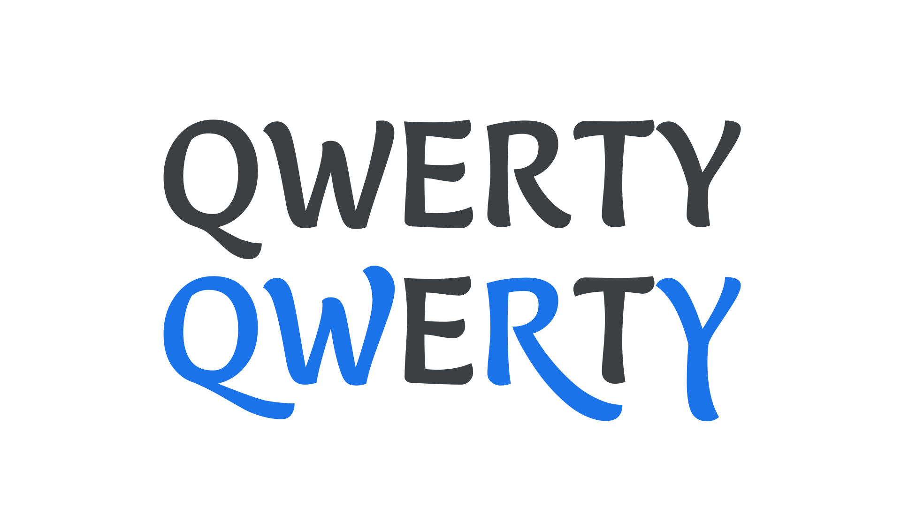
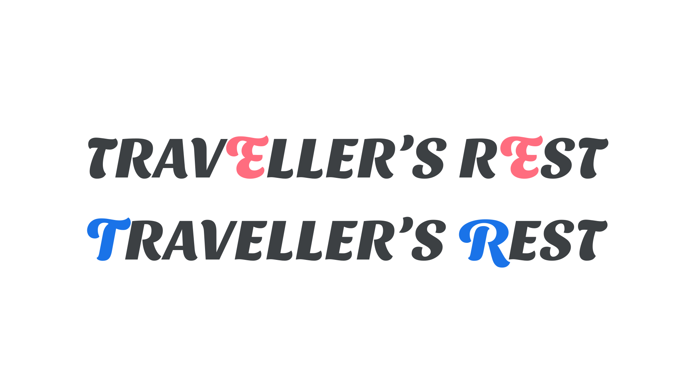

Swash glyph
By Google Fonts Knowledge contributors · Google Fonts Knowledge.
Original article · Source on GitHub · CC BY-SA 4.0. Text, illustrations and existing credits reproduced from the licensed Knowledge repository. Open Shelf adapted the layout and links; these adaptations are also CC BY-SA 4.0. No endorsement implied.
A swash glyph is a decorative, alternate variant, most commonly found in serif and script typefaces. Such glyphs have more elaborate and ornate flourishes—such as actual swashes—than their regular versions.

Because of the extra space often taken up by swashes, special attention should be paid to where they appear in a word. Often, their most suitable location is at the beginning or end of a word (for this reason, swash capitals are intended only for the beginning of capitalized words), and a common mistake made by novice typographers is to use swash characters that cause an undesirable collision between letterforms.

The first line is incorrect, as the swashes on the “E” in the middle of each word clash with the letters in front of them; the second line, using swashes only for the first characters of each word, looks much better.
Expertly coded fonts with swash glyphs have built-in rules that avoid such clashes, while fonts of a lesser quality are more likely to have them.
Swashes—if they exist in the font file—can be turned on and off via OpenType.